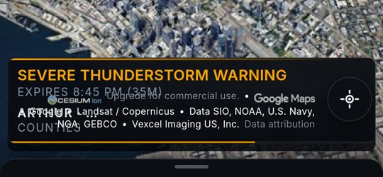
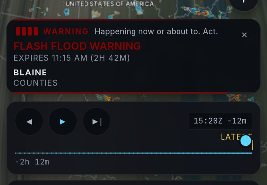
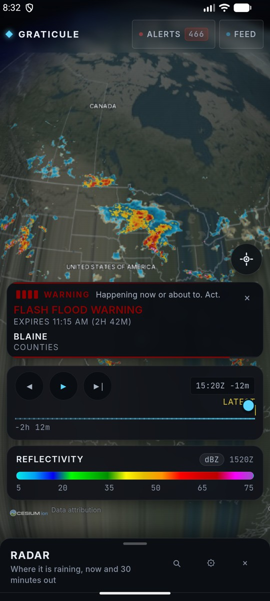
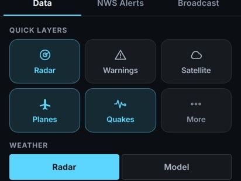
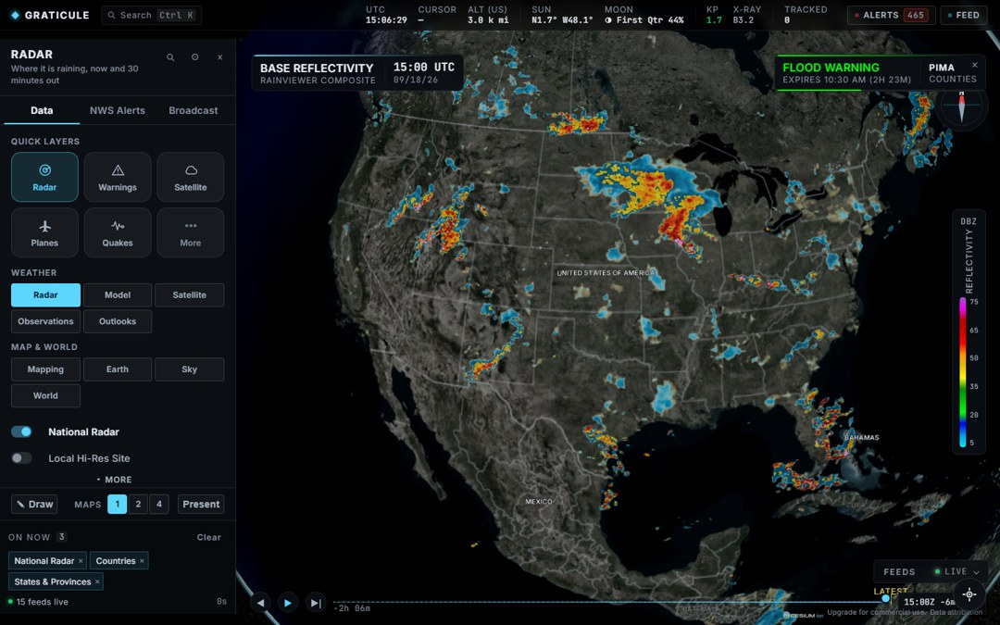
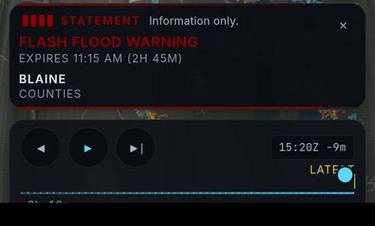
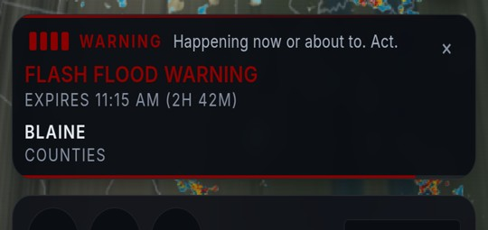
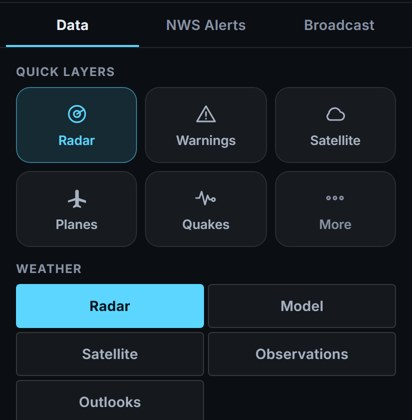
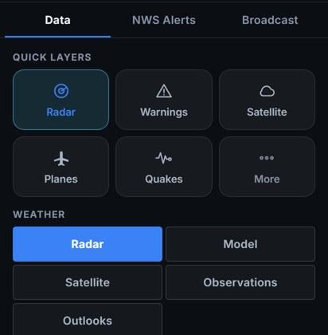
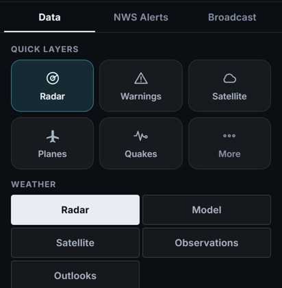

You picked D, with additions. Here is what landed, what I found on the way, and the one thing I want you to decide with your eyes rather than let me decide for you.
Every screenshot below is real: the phone frames are the shipping APK running on the emulator, the desktop frame is the app at 1440×900. Nothing here is a mockup.
The attribution strip printed through the severe-weather card. You saw it last night: "ARTHUR COUNTIES" buried under the Google credits.


Seven elements each positioned themselves off the sheet height plus a number somebody picked by eye: credits +6, timeline +8, warning +52, legend +56, locate +16, toast +72. Every one of those numbers is a claim about how tall the other six are.
The credit strip proved it. It is empty markup that Cesium fills in after the page loads, and Cesium positions what it injects absolutely, so the strip held 18 pixels of legally required text and measured zero. It reserved no space, so its text climbed upward through the warning.
A number written today cannot be right about content that arrives tomorrow. Arithmetic cannot reserve space. Layout can.
So the seven became one column that lays out, and the three things that float above it clear it by a height that is measured, not guessed. The proof that the chain works: fixing the credits took them from 0 to 18px, the measured stack height moved 159 to 177 — exactly +18 — and the locate button stepped up 18px on its own without anyone telling it to.
You said D has only buttons and needs information graphics. That is now the colour scale, and it is a real card rather than a chip hiding in the corner: what field is drawn, its units, the time that frame is actually valid for, and the ramp with its dBZ numbers.
The timestamp matters more than it looks. A radar ramp with no time cannot tell live from an hour stale, and that difference is the whole value of the layer. A forecast frame is labelled fcst, because putting a bare timestamp on a prediction claims somebody measured it.


My first version put a tile called Radar eight lines above a division chip called Radar. One switches the layer on. The other navigates. Two verbs, one word, one screen. The Quick layers heading is what separates them, and Alerts became Warnings because there is an NWS Alerts tab directly above it.

display: contents above phone width, so it vanishes from layout and every desktop rule resolves exactly as before. The vertical dBZ scale on the right still reads high at the top: the colour data moved from JavaScript into CSS so each orientation picks its own direction from the same stops.You said "like the colored severity bar." The ramp got a legend. The alert card's colour got nothing — and it turns out that was the more serious of the two.
That colour is the official NWS product colour. NWS assigns Flood Warning green. So the card was rendering the words "FLOOD WARNING" in green. Correct for a forecaster who knows the palette. To everyone else, and your audience is explicitly everyone, green on a warning reads as all-clear.
I did not invent a new colour system — there is no honest way to overrule a national standard on a weather map. Instead the colour stops carrying the meaning alone: four pips filled to rank, the class in a word, and the line that says what it asks you to do.


Worth knowing how that got through. I read a value called p as a 1–4 severity rank because that is what its fallback branch returns. The real table computes it as a draw-order priority across all 111 NWS products, so it runs to 111. When I grepped the surrounding code to check, it printed values 1 to 4 and agreed with me — because those were the fallback's numbers, not the table's. The only thing that disagreed was the screenshot.
A fresh reviewer with no memory of my reasoning went over the build. It returned fix, not rebuild, with eight material findings. Five were right and are fixed. Two were wrong and I checked rather than complied.
The five it got right: the severity key above, a 6px overprint I caused on desktop, a rule that has never worked, a state desync in my own code, and the accent needing to be written down. All fixed and verified.
A rule hiding the 1 / 2 / 4 map selector on phones, with a paragraph explaining exactly why, has never once worked. A selector elsewhere in the file is more specific and silently beat it. A documented intention the stylesheet quietly overruled, for as long as it has existed. Now fixed and measured: display: flex → none at 412px.
D's mockup used blue. The app currently uses cyan. I did not switch a token used in 700 places overnight with no way for you to look at it first.
But while checking, I found something that applies to both: the reflectivity ramp's low end is cyan and blue, roughly 5 to 25 dBZ. So the chrome and light rain are drawn from the same part of the spectrum either way.

#5cd6ff
#3b82f6
#e8edf3My recommendation: blue, with one change. You chose D and blue is D, and the collision is survivable because chrome-blue is small and hard-edged while data-blue is large and soft. But no filled chip should ever be the brightest thing in the frame, so the active chip becomes a tinted fill rather than a solid block. That keeps your pick and the promise that the weather leads.
Say 1, 2, or 3, or overrule me.
| Commit | What |
|---|---|
| e2c714e | The bottom stack lays out instead of guessing; the legend explains itself |
| e4171c8 | Quick layers: the five people reach for are one tap, not five levels |
| 899f8a8 | The locate button clears the warning card, measured not assumed |
| 5bacd04 | The direction contract recorded in the markup, where a build cannot lose it |
| 84b2e1f | Finish-review fixes: the severity colour now explains itself |
Plus DESIGN.md, written from what actually got built rather than what was intended, and issues.md 70 for what was deliberately left.
#legend is defined five times and #hud four, successive rewrites stacked on each other. That cost me real time last night and it deserves its own pass with before/after screenshots, not a quiet cleanup buried inside a feature. Logged as issues.md 70.node .claude/skills/impeccable/scripts/..., is a silent no-op on this machine. That path is a junction, so the script's own "am I the main program?" check fails and it exits successfully having done nothing. Run through the real path it worked immediately.